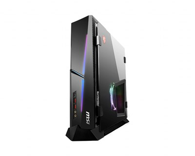

メインPC
MSI Trident X
 2019年2月に購入。それから私の荒い使い方にも耐えて来た。スリムなので、机の下においてもあまり気にならないサイズ。
スリムPCな故に、拡張性が非常に悪い。（ビープ音用ブザーもつけれなかった）
最近、タスクマネージャーのCPU使用率がおかしいことに気づき、
原因を探るとUEFIのバージョンが当時のままであることが原因らしいことに気づいた。
しかし、中々UEFIのアップデートがうまく行かず、現在に至っている。
写真：MSI公式サイトより
スペック
- CPU：Intel® Core™ i9-9900K
- GPU：GeForce RTX 2080
- メモリ：DDR4 2666MHz 32GB
- OS：Windows 10 Home
- SSD：512GB M.2、1TB mSATA
- HDD：2TB SATA（ジャンクPCから出てきた奴）
- 重量：9.2kg
- 値段：320,000円 BTOなのでわかることはこれくらい